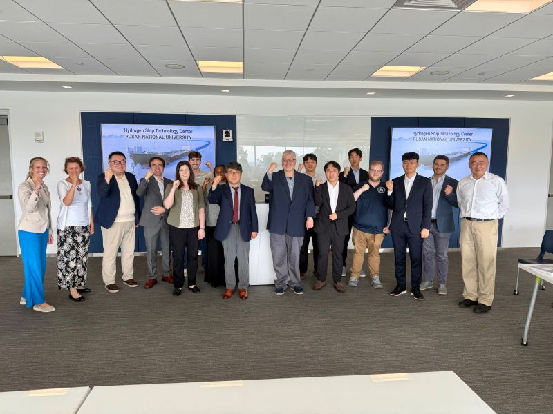

Participation in UConn–HSTC (PNU) U.S.–Korea Shipbuilding Collaboration Meeting
Prof. Sunbeom Kwon was invited to participate in a series of meetings at the University of Connecticut (UConn) in USA, held in conjunction with the visit of the Pusan National University Hydrogen Ship Technology Center (PNU HSTC) delegation. The meetings brought together faculty members and researchers from UConn and Korea to discuss opportunities for U.S.–Korea collaboration in shipbuilding, hydrogen and energy technologies, advanced manufacturing, and workforce development. Prof. Kwon joined the PNU HSTC delegation for the visit and participated in the research discussions. The event provided an opportunity to exchange ideas with researchers from UConn and PNU and to explore potential opportunities for future international research collaboration.
권순범 교수는 부산대학교 수소선박기술센터 방문단의 미국 방문과 함께 미국 코네티컷대학교에서 개최된 회의에 초청되어 참석하였습니다. 이번 회의에는 코네티컷 대학과 한국의 교수 및 연구자들이 참석하여 선박 건조, 수소 및 에너지 기술, 첨단 제조, 인력 양성 등을 주제로 한·미 간 공동연구 및 협력 가능성에 대해 논의하였습니다. 권순범 교수는 부산대학교 수소선박기술센터 방문단과 함께 연구 논의에 참여하여 코네티컷대학교 및 부산대학교 연구진들과 다양한 연구 아이디어를 교류하고 관련 분야의 연구 동향을 공유하였습니다. 이번 워크숍은 국제적인 연구 교류를 확대하고 향후 한·미 간 공동연구 및 학술 협력의 가능성을 모색할 수 있는 뜻깊은 자리였습니다.